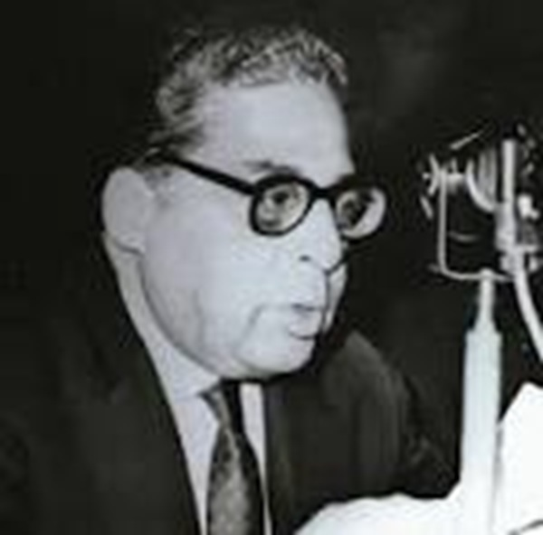

Durant la période médiévale (VIIIe-XVe siècle), l’Algérie fut un centre intellectuel et religieux majeur du Maghreb. Sous les dynasties successives :
Elle vit l’émergence de nombreux penseurs, historiens et théologiens influents.
 ❯
(1384-1479) – Théologien soufi, exégète du Coran et auteur d’ouvrages sur la spiritualité.
❯
(1384-1479) – Théologien soufi, exégète du Coran et auteur d’ouvrages sur la spiritualité.
La littérature algérienne de cette époque avait pour but d’affirmer l’entité nationale, en opposition aux clichés coloniaux. Parmi les œuvres majeures : La Grande Maison, L’Incendie, et Le Métier à tisser de Mohammed Dib, ainsi que Nedjma de Kateb Yacine.
Kateb Yacine – écrivain, poète et dramaturge

Moufdi Zakaria – poète et auteur de chants patriotiques
Assia Djebar – académicienne française, grande figure de la littérature

Ahlem Mosteghanemi – écrivaine algérienne, la plus lue du monde arabe

Mouloud Feraoun – figure littéraire, assassiné en 1962

La littérature algérienne contemporaine se divise entre une écriture marquée par le terrorisme des années 1990 et une littérature plus individualiste. Parmi les œuvres marquantes : L’Écrivain, Les Hirondelles de Kaboul et L’Attentat de Yasmina Khadra
 Mémoire de la chair d’Ahlem Mosteghanemi, et Nulle part dans la maison de mon père d’Assia Djebar.
Mémoire de la chair d’Ahlem Mosteghanemi, et Nulle part dans la maison de mon père d’Assia Djebar.